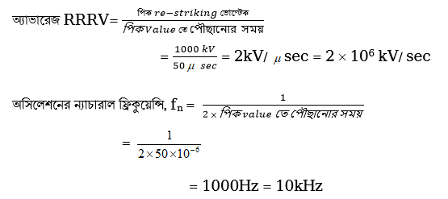

160
| সার্কিট ব্রেকার | আইসোলেটর |
|---|---|
| ৪। এটি ফিউজ ও সুইচ হিসেবে ব্যবহৃত হয়। | ৪। এটি কেবলমাত্র ডিস কানেকটিং সুইচ হিসেবে ব্যবহৃত হয়। |
| ৫। সমপ্রসারণে কোনো বাধার সৃষ্টি করে না। | ৫। ভবিষ্যৎ স্মপ্রসারণের সহায়ক নয়। |
| ৬। এটি বর্তনীর অস্বাভাবিক অবস্থায় স্বয়ংক্রিয়ভাবে বর্তনীকে বিচ্ছিন্ন করে। | ৬। স্বয়ংক্রিয়ভাবে কাজ করে না। এটি ম্যানুয়ালি পরিচালিত হয়। |
| ৭। এর তৈরি খরচ বেশি। | ৭। এর তৈরি খরচ কম। |
সমস্যা-১। একটি অয়েল সার্কিট ব্রেকারের রেটিং দেওয়া আছে 1500 অ্যাম্পিয়ার 1000 এমভিএ, 33 কেভি সেকেন্ড, 3 ফেজ, 50 সাইকেল/সেকেন্ড । ঐ সার্কিট ব্রেকারের (ক) রেটেড নর্মাল কারেন্ট, (খ) ব্রেকি ক্যাপাসিটি, (গ) রেটেড সিমেট্রিক্যাল ব্রেকিং কারেন্ট, (ঘ) রেটেড মেকিং কারেন্ট, (ঙ) শর্ট টাইম রেটিং, (চ) রেটেড সার্ভিস ভোল্টেজ কত?
সমস্যা :
(ক) রেটেড নর্মাল কারেন্ট = 1500 অ্যাম্পিয়ার।
(খ) ব্রেকিং ক্যাপাসিটি = 1000 এমভিএ
(গ) রেটেড সিমেট্রিক্যাল ব্রেকিং কারেন্ট = $\frac{1000\times10^6}{\sqrt{3}\times33\times10^3}$ = 17496 অ্যাম্পিয়ার
(ঘ) রেটেড মেকিং কারেন্ট =2.55×17496 = 446.14 অ্যাম্পিয়ার
(ঙ) শর্ট টাইম রেটিং = 17496 অ্যাম্পিয়ার তিন সেকেন্ডের জন্য
(চ) রেটেড সার্ভিস ভোল্টেজ = 33 কেভি।
বি: দ্র: মেকিং ক্যাপাসিটি = $\sqrt{2}\times1.8\times$(ব্রেকিং কারেন্ট) = 2.55 $\times$ (ব্রেকিং কারেন্ট)
সমস্যা-২: একটি সার্কিট ব্রেকারের শর্ট সার্কিট টেস্টের ফলাফল নিম্নরূপ:
(i) পিক re-striking ভোল্টেজে পৌঁছানোর সময় = 500 μsec
(ii) পিক re-striking ভোল্টেজ = 100kV
অ্যাভারেজ RRRV (Rate of rise of re-striking voltage) এবং অসিলেশনের ফ্রিকুয়েন্সি নির্ণয় কর।
উত্তর:
